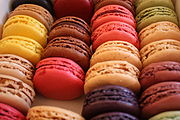
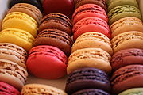

In the 14th century Guillaume Tirel, a court chef known as "Taillevent", wrote Le Viandier, one of the earliest recipe collections of medieval France. During that time, French cuisine was heavily influenced by Italian cuisine. In the 17th century, chefs François Pierre La Varenne and Marie-Antoine Carême spearheaded movements that shifted French cooking away from its foreign influences and developed France's own indigenous style. Cheese and wine are a major part of the cuisine, playing different roles regionally and nationally, with many variations and appellation d'origine contrôlée (AOC) (regulated appellation) laws.
French cuisine was codified in the 20th century by Auguste Escoffier to become the modern haute cuisine; Escoffier, however, left out much of the local culinary character to be found in the regions of France and was considered difficult to execute by home cooks. Gastro-tourism and the Guide Michelin helped to acquaint people with the rich bourgeois and peasant cuisine of the French countryside starting in the 20th century. Gascon cuisine has also had great influence over the cuisine in the southwest of France. Many dishes that were once regional have proliferated in variations across the country.
Basil Salmon Terrine
Bisque
 

Mille -feuille
Macroon
Creme brulee
Crepe
CRÈME BRÛLÉE
SERVES 6
Ingredients
1 qt. heavy cream
1 vanilla bean, halved lengthwise, seeds scraped and reserved
3⁄4 cup sugar
8 egg yolks
Turbinado sugar, for serving
Instructions
Heat oven to 300°. Bring cream and vanilla bean with seeds to a simmer in a 2-qt. saucepan over medium-high heat. Remove from heat and let sit for 30 minutes; discard vanilla bean. In a bowl, whisk sugar and yolks until smooth. Slowly pour in cream mixture, whisking until smooth; set aside.
Place a paper towel in the bottom of a 9″ x 13″ baking pan, and place six 6-oz. ramekins inside pan. Divide custard among ramekins. Pour boiling water into pan to come halfway up outsides of ramekins. Bake until custards are set but still slightly loose in center, about 35 minutes. Transfer ramekins to a wire rack; cool. Chill until firm, at least 4 hours. Dab any condensation off surface of custards with a paper towel. Sprinkle turbinado sugar evenly over surface of each custard. Guide the flame of a blowtorch back and forth over surface until sugar caramelizes; let sit briefly until sugar hardens.